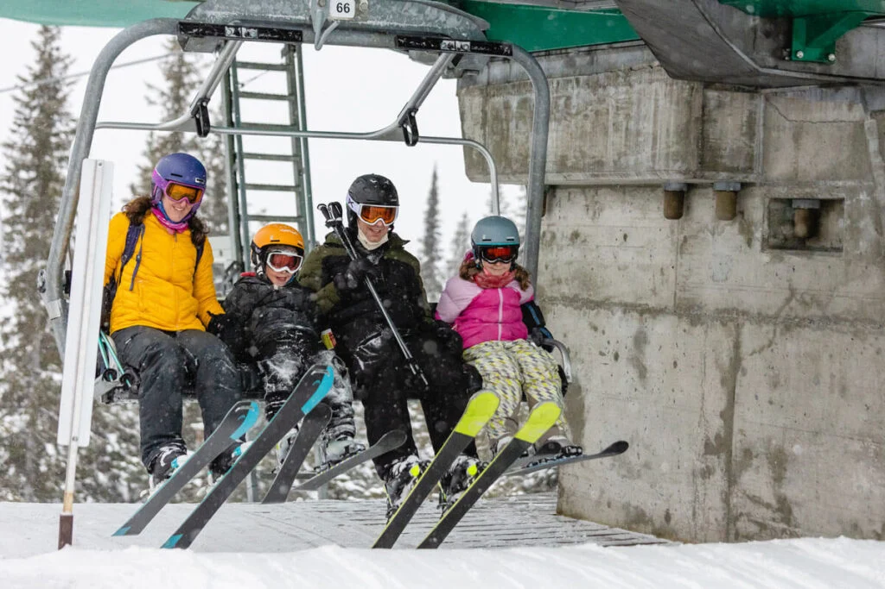
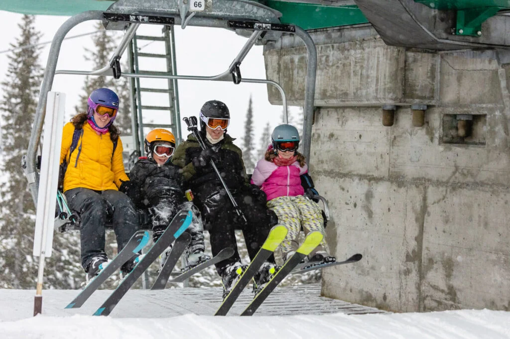

Winter is one of the four temperate seasons, following autumn and preceding spring. It is characterized by falling leaves, dormant trees, and colder temperatures. In the Northern Hemisphere, winter typically begins around December 21st or 22nd and ends around March 20th or 21st. During winter, plants enter dormancy, some animals hibernate, and the length of daylight decreases. It's often associated with tranquility, introspection, and the beauty of snow-covered landscapes.
WINTER
❄️Winter's Impact: Ecosystems & Culture❄️
Winter plays a vital role in ecosystems, as plants and animals adapt through dormancy and hibernation. Its weather affects agriculture and daily life, while cultural traditions celebrate the season, fostering community bonds.
❄️ DISCOVER THE WONDERS OF WINTER ❄️
Experience the beauty of winter with us! We offer a curated selection of seasonal delights sourced from local markets, delivered straight to your door with premier service. Whether adjusting to safety measures or managing remote work, let us handle your winter dining needs seamlessly. Indulge in the flavors of the season effortlessly!
Amidst the falling snow and chilly air of winter, allow us to simplify your dining choices. Whether navigating changing regulations or adapting to work-from-home routines, count on us for culinary support. Embrace the coziness and charm of winter effortlessly!
Winter's Reliability
Our platform embodies the reliability of winter's beauty, reflecting steadfastness in every aspect of our service.
Frosty Efficiency
Experience the efficiency of winter's charm, where every interaction is brisk and seamless.
Snowy Expertise
Our platform is crafted with expertise akin to the delicate artistry of snowflakes, nurtured by skilled hands.
Popular Activities During Winter
Here are some pictures and introduction that related to the activities can held during ❄️Winter!!!

 


Snowy Retreats:
Winter invites enchanting snowy retreats, offering opportunities for cozy gatherings amidst serene landscapes. Settle onto a blanket of snow beneath the tranquil shades of winter trees, and relish in a delightful spread of seasonal delights. It's a chance to savor the simple joys of cherished company, laughter, and the comforting warmth of winter's embrace. Create lasting memories with loved ones in this serene winter wonderland.
Winter Wonderland Exploration:
Another captivating activity during winter is embarking on adventures in winter wonderlands, such as exploring snow-covered trails or wandering through frosty forests. Immerse yourself in the enchanting winter scenery as snowflakes dance around you, listen to the serene silence of the snow-covered landscape, and feel the crisp kiss of the winter air. Carrying a thermos filled with hot cocoa, cozy blankets, and a basket of delectable winter treats adds to the magic of these outdoor escapades.
Ice Skating Adventures:
Winter transforms ordinary landscapes into icy wonderlands, perfect for exhilarating ice skating adventures. Glide gracefully across frozen ponds or intricately crafted ice skating rinks, feeling the thrill of the icy breeze against your cheeks and the satisfying crunch of snow beneath your blades. Embrace the joy of winter as you twirl and spin on glistening ice, creating unforgettable moments amidst the frosty beauty of the season.
üå®Ô∏è Winter Wonderland Awaits! Join Us for Frosty Adventures! ‚ùÑÔ∏è
Hey there, winter enthusiasts! Ready to immerse yourself in the enchantment of winter? In our upcoming guide, we've curated three delightful activities to fully embrace this serene season. From exhilarating snowshoeing excursions to cozy evenings by the fireplace, there's an experience tailored just for you. Additionally, we'll unveil enchanting destinations like snowy mountain retreats and ice skating rinks, brimming with the sparkling beauty of winter. Don't let winter's magic pass you by—click below to explore more captivating winter-related destinations!